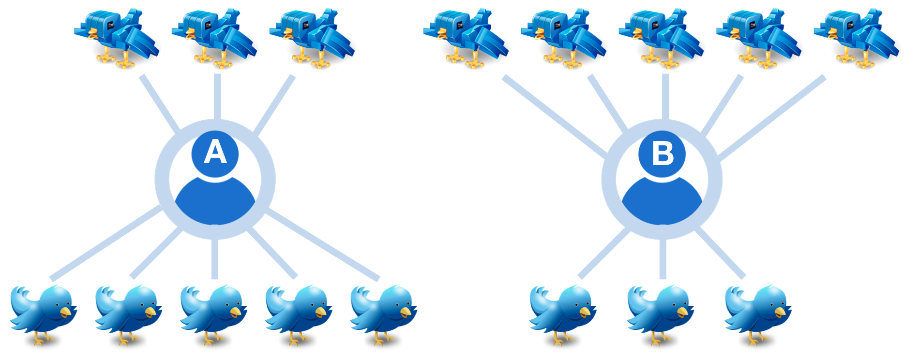
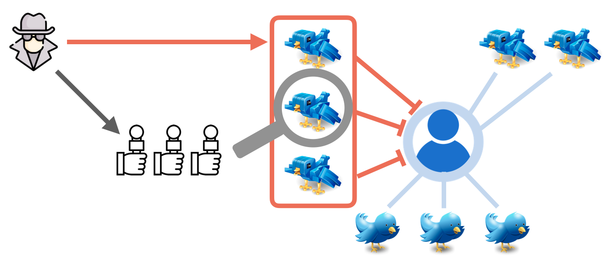
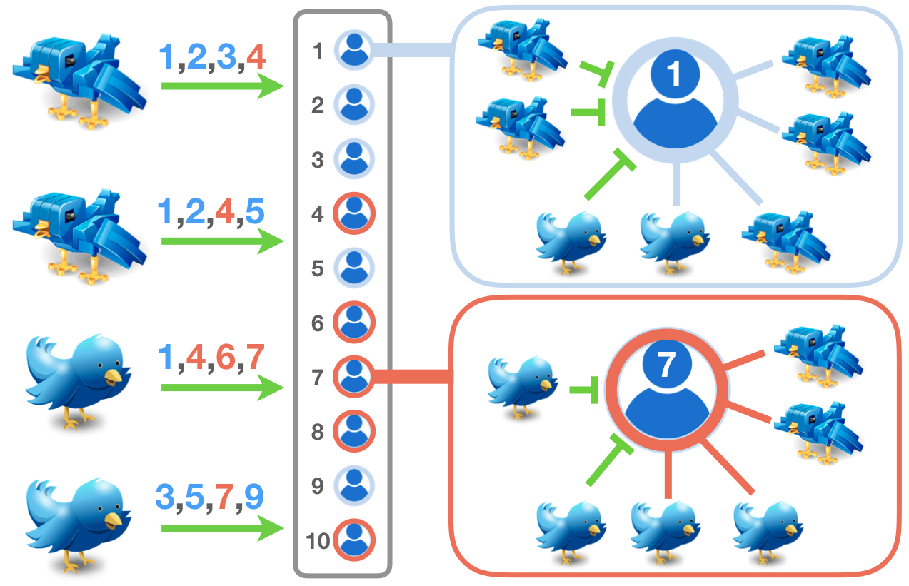

Sosyal ağlardaki kötü aktörler platformun sağladığı olanakları ve kendi keşfettikleri açıkları amaçları doğrultusunda kullanmaya çalışırlar. Manipülatif bir faaliyetin kaynağını tespit etmek, bu faaliyetleri gözlemlemekten çok daha karmaşık ve zordur.
Sosyal ağlar sağladıkları önemli olanakların yanında kötü aktörler için de bir oyun alanı haline gelmiş durumda. Her gün yapılan milyonlarca paylaşımın etkisini bu paylaşımların görünürlüğüne ve almış olduğu etkileşimlere bakarak ölçebiliriz fakat paylaşılan bir içeriğin doğruluğunu veya çok takipçili bir hesabın ne kadar güvenilir olduğunu sadece sayılara bakarak tespit etmek mümkün değil.
Bir önceki Sarkaç yazımızda sosyal botları anlatmış, nasıl yaratıldıklarını ve tespit edilebilmeleri için kullanılan özellikleri incelemiştik. Sosyal botların özellikle dezenformasyon ve koordinasyonlu faaliyetlerin yürütülmesindeki kullanımlarını ele almıştık. Bu yazıda ise özellikle çok takipçili hesaplara ve onların dahil olduğu manipülatif kampanyalara odaklanacağız.
Kovid-19 pandemisinde halk sağlığını olumsuz etkileyecek dezenformasyon yayan hesapların oldukça popüler olduğunu gözlemlemiştik. Bu paylaşımlar, özellikle pandeminin erken dönemindeki bilinmezlik ortamında yüz binlerce kez tekrar paylaşıldı ve iletişim kanallarındaki gerçek bilginin erişilebilirliği önünde engel oluşturdu.[1,2,3] Doğrulama kuruluşları ile Sağlık Bakanlığı gibi resmi kurumların yapmış olduğu paylaşımlar ve bilgilendirme çabaları bu sebeple önemli. Bu alandaki dezenformasyona karşı mücadele, zaman içinde bilimsel kanıtların ve somut bulguların sunulmasıyla önemli yol aldı.
Siyasi tartışmalarda da aile, içinde bulunulan sosyal gruplar ve etkileşime girilen online platformlar inanç ve düşünceleri doğrudan etkiliyor.[4,5] İnanç sistemleri ve siyasi tercihler değişmesi zor olgular ve kişinin değer algılarıyla da doğrudan ilişkili; dolayısıyla kişilerin inanç ve siyasi tercihlerine dokunan dezenformasyon faaliyetleri son derece etkili. Bir içeriği kişisel yanlılıklarımız ve inançlarımız üzerinden değerlendirmek, duygusal tepkiler verebildiğimiz için oldukça yanıltıcı olabilir. Kendimizi ait gördüğümüz gruplarla ilişkili olumlu düşünce ve haberlerden mutlu olurken, “diğerleri/ötekiler” diye nitelendirmeye yatkın olduğumuz gruplar hakkında olumsuz düşünceleri olduğu haliyle kabul etmeye ve yakıştırmaya daha yatkınız.[6,7,8] Bu sebeple çevrimiçi ağlarda yayılan bilgi üzerinden ayrışma, tartışma ve diğer grupların paylaşımlarını tamamen görmezden gelerek kendi yankı odalarımız içinde kalma eğilimindeyiz.[9,10]
Sosyal ağlarda önümüze gelen bilgileri inançlarımız üzerinden okumak yerine somut verilere odaklanarak ve alternatif yorumların da varlığını göz önüne alarak değerlendirme sorumluluğumuz var. Bu yazıda ele alacağımız gibi, bu konu özellikle siyasetçileri ve siyasetle ilgili paylaşımlar yapan çok takipçili hesapları ilgilendiriyor.
Sosyal ağlardaki manipülatif faaliyetleri yorumlarken, sosyal ağlarda kişilerin kendilerini olduklarından farklı gösterebilmesi, amaçlarını açıkça belli etmeden koordinasyonlu faaliyetler düzenleyebilmeleri ve bir aktivitenin arkasındaki itici gücün kaynağını tespit etmenin zorluğu nedeniyle bazı alternatif senaryoları dikkate almalıyız. Bunu anlayabilmek için örnek bir senaryo kurgulayalım ve olası yorumları beraber tartışalım.
Sosyal medyada paylaşımlar yapan ve eşit derecede popüler olan iki hesaba yönelik yapılan bir analizde farklı oranlarda otomasyon davranışı sergileyen ve bot hesap olduğu düşünülen takipçiler olsun. Şekil 1 böyle iki hesabı (A ve B) ve takipçilerini temsil etsin. A’nın takipçileri arasındaki sekiz hesaptan üçü bot hesaplardan oluşmaktadır ve B için yapılan analizde sekiz hesaptan beşinin bot hesap olduğu tespit edilmiştir.
Şekil 1: Eşit sayıda takipçili iki örnek hesap ve bunların takipçilerine ait bot hesapların oranları temsil edilmiştir. A hesabında 3/8 oranında ve B hesabında 5/8 oranında bot takipçi bulunmaktadır.
Bu bilgiler ışığında yapılabilecek farklı yorumlar aşağıdaki gibi olabilir:
Bu senaryoların hepsi olası senaryolar. A ve B bu durumdan tamamen habersiz olabilir veya kontrolleri dahilinde gerçekleşmiş olabilir. Burada B hesabının ait olduğu kişi veya kuruma dair tutumumuz bu senaryolara olan yaklaşımlarımızı etkileyecektir. Tam olarak da bu sebeple daha dikkatli planlanmış ve sosyal medya kullanıcılarının algılarını ve beklentilerini manipüle etmeyi planlayan senaryoların da var olabileceği ihtimaline olanak vermeliyiz.
Şekil 2’de olası bir başka senaryoya dair tasviri görebilirsiniz. Burada takipçiler arasındaki botların bir kısmı kötü niyetli bir aktör tarafından bu hesabın takipçi sayısını arttırmak amacıyla ve hesabın bilgisi dışında kullanılmıştır. Bu aktör aynı zamanda bot hesapların varlığına dair bilgiyi gazetecilerle ve araştırmacılarla paylaşarak bahsi geçen hesabın detaylı incelenmesini talep etmiştir ve bu hesabı botları kullanmakla suçlamaktadır.
Şekil 2: Senaryoda söz konusu hesap bot hesaplar, kötü bir aktör tarafından takip ettiriliyor ve sonrasında gazeteciler/araştırmacılar uyarılarak hesabın güvenilirliğine zarar vermek için kullanılıyor.
Bu senaryo her ne kadar gerçekleşmesi zor gözükse de bize şu soruları sordurmalı: Bot hesapların varlığından kim fayda sağlıyor? Eğer bot takipçilerin hesaba ölçülebilen bir faydası yoksa bu durumda bot takipçili hesapların sorumluluğu ne olmalıdır? Twitter gibi sosyal ağlarda kazanılan takipçilerin muhasebesi çoğunlukla sayılar üzerinden tutulur. Ancak tespit edilen bot hesapların, takipçi sayılarına olan olumsuz etkilerine rağmen, engellenmesi ve takipten çıkarılması sağlıklı bir iletişim ağının oluşturulması ve olası bir itibar saldırısının önüne geçilmesi için önemlidir.
Bu tür planlı bir manipülasyon sonucu gerçekleştirilebilecek senaryoların kaynağını tespit etmek oldukça zordur. Burada disiplinler arası yaklaşım kullanılarak bu hesapların içinde bulunduğu konum, diğer hesaplarla etkileşimleri ve motivasyonları da dikkatle incelenmeli ve olası bir manipülasyondan kimin fayda sağlayacağının muhasebesi titizlikle yapılmalıdır. Bu durumda bile erişilebilir olan verilerle yapılabilecek çıkarım kısıtlı olacaktır. Ancak sosyal medya firmalarında, kullanıcılara ait aktiviteler, IP adresleri vb. bilgiler de olduğundan daha detaylı bir analiz yapılması mümkün olabilir.[11]
Platformların da gözlemlenen bot takipçi sayısı üzerinde bir etkisi var. Örneğin sistemin yaptığı öneriler kullanıcılara ait bilgiler üzerinden sağlanıyor. Bu öneri sistemlerindeki algoritmik yanlılıklar da sistem davranışında istenmeyen haksızlıkların oluşmasına neden oluyor. Örneğin Facebook üzerinde yapılan reklam ödemelerinin şeffaflık raporunda, Donald Trump’ı destekleyen kampanyaların daha az maliyetle, daha geniş kitlelere ulaşabildiği gözlemlenmişti.[12] Burada paylaşılan reklam içeriklerinin ilgi çekiciliği ve platform üzerinde farklı siyasi görüşlerden olan kullanıcı sayılarındaki farklar bir siyasi gruba avantaj sağlamıştı ve seçim kampanyalarını yürütenler sistemlerdeki bu yanlılıkları tespit edip erişimlerini ve kampanya maliyetlerini optimize etmişti. Facebook’un sahip olduğu bu yanlı sistemin sorunları üzerine akademik çalışmalar yapıldı[13] ve bu çalışmalar sonucunda açılan dava neticesinde Facebook’un demografik belirteçler üzerinden reklam verme özellikleri sınırlandı. Buna rağmen yapılan deneysel çalışmalar sistemin içinde bulundurduğu diğer kişilere özel bilgilerden yanlılıkların devam ettiğini gösteriyor.[14] Makine öğrenmesi sistemlerindeki yanlılıkları kaldırmak üzerine yapılan araştırmalar son 5-10 yıldır hız kazandı çünkü sağlıktan hukuka, bankacılıktan insan kaynaklarındaki iş süreçlerine kadar pek çok makine öğrenmesi sisteminde bu zafiyetler mevcut.
Sosyal medyanın kullanıcılara sunduğu hesap önerileri de bir tavsiye sistemi ile seçiliyor. Hesap yaratılış aşamasında yani sistemin kullanıcı hakkında IP adresi ve internet tarayıcısı ayarları gibi sınırlı ilk bilgilere sahip olduğu durumda dahi bu öneriler yapılabiliyor. Platform üzerinde geçirilen zaman, kullanıcıdan toplanan etkileşim ve ilgi alanlarına dair veriler arttıkça yapılan öneriler kişiselleştiriliyor.
Hesap yaratıldığında siyaset ile ilgilendiğini belirten ve İstanbul’dan, İzmir’den, Ankara’dan, Trabzon’dan veya Hakkari’den hesabını ilk kez açan bir sosyal medya kullanıcısına Twitter hangi hesapları önerirdi? Aynı şekilde İstanbul’dan bağlanan ve hesabının dilini İngilizce, Türkçe, Rusça veya Arapça olarak ayarlayan kullanıcılar için hangi hesaplar tavsiye edilirdi? Kişiselleştirme adına yapılan farklı öneriler çoğunlukla bir fayda amacıyla tasarlanır ancak farklı ülkelerde, zamanlarda, dillerde yaratılan bot hesaplar için bu kişiselleştirilmiş önerilerin rolü nedir?
Gözlemlenen bazı bot faaliyetlerinde platformların rolü olabileceğini de göz önüne almalıyız. Görünürlüğünü arttırmak isteyen ve bunun için içeriklerinde popüler hesapları etiketleyen botları 2016 Amerikan başkanlık seçimlerinde gözlemlemiştik.[15] Benzer sebeplerle Twitter’da trend olan konuları hedef alan ve kendi içeriklerini bu hashtagler ile kullanarak görünürlük kazanmaya çalışan hesaplara da Twitter üzerinde denk gelmek mümkün.[16] Bu hesapların yaratılmasında sistematik bir efor gerekli çünkü platformlar, kimlik doğrulamasını telefona gelen bir SMS veya e-posta üzerinden gerçekleştiriyor ve yeni yaratılan hesapları daha yakından gözlemliyor. Yeni hesapların başka hesapları takip etmesi ve profil bilgilerinin doldurulması bekleniyor, Twitter şüpheli gördüğü hesapları kısa sürede kapatabiliyor. Platformların sahte hesapları azaltmak için aldığı bu önlemler yüzünden sahte hesap yaratanlar, ilk karşılarına çıkan hesapları takip etme eğiliminde olabilirler. Bu da platformun öncelikli olarak önerdiği hesapların bot takipçi sayısının artmasına neden olabilir. Bu durum Şekil 3 ile temsil edildiği şekilde gerçekleşebilir.
Şekil 3: Sosyal medya öneri sistemlerinden faydalanan 4 hesap (solda) en öncelikli yapılan önerileri veya kendi ilgi alanları ağırlıklı (mavi ve kırmızı ile temsil edilen) tercihler yaparak takip etmektedir. Bu durumda 1 ve 7 numaralı hesapların takipçileri sistemin önerileri ve hesapların davranışları neticesinde farklı şekilde değişebilir.
Bu yazıda sahte takipçilere ve takipçilerin hesabın görünür popülarite metriklerini manipüle etme amacıyla kullanılmasına ve bunları yorumlarken dikkat edilmesi gereken faktörlere odaklandık. Sosyal ağlarda manipülasyon ve koordinasyonlu faaliyetler düzenlemenin pek çok başka mekanizması da mevcut.[17]
İçeriklerin bot hesaplar tarafından beğenilmesi ile görünürlüğünün ve paylaşım metriklerinin manipülasyonu, ülke genelinde trend olacak içeriklerin botlar kullanılarak manipüle edilmesi[18] de bunlara örnek verilebilir ve sosyal medya kullanıcılarının etkileştikleri içerik ve hesaplara şüpheli yaklaşmaları bu nedenle önemlidir. Dezenformasyonun yayılmasında izlenen stratejilerden birisinin de, yayılması amaçlanan içeriğin popüler hesaplar aracılığıyla görünür kılınması olduğunu biliyoruz.[19] Özellikle siyasetçilerin takipçilerinden gelen paylaşımlarla etkileşirken çok dikkatli olması ve kötü niyetli aktörlerin çabalarına fırsat vermemesi gerekli.
Sabancı Üniversitesi yürüttüğümüz #Secim2023 projesinde[20] siyasilere ait hesapları detaylı olarak inceliyoruz. Sahte takipçilerin veya bot hesapların sosyal medya hesaplarının popülerliklerini veya görünürlüklerini manipüle etmek için kullanıldığını geçmiş araştırmalarımızda göstermiştik[21,22,23]. Yaklaşmakta olan 2023 seçimleri için geliştirdiğimiz anomali takipçi tespit sistemi ile de farklı örüntüleri tespit ediyor ve paylaşıyoruz, siyasilerin takipçi sayılarındaki günlük değişimleri başka bir ara yüz üzerinden takip ediyoruz. Erişilebilir ara yüzler ve veri kaynakları ile hesaplamalı sosyal bilimler yaklaşımlarını seçim döneminde gözlemlenebilecek dezenformasyon ve çevirim içi manipülasyon faaliyetlerinin tespitinde kullanmayı amaçlıyoruz.